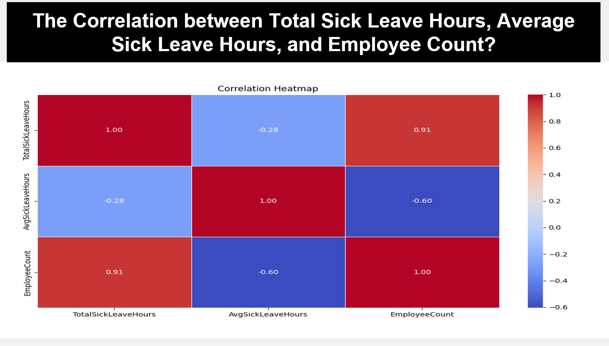

Adventure-works database Analysis
Tools Used: SQL, Python
This project, completed as part of the Data Analytics Program (DA-NAT4), explores relationships between various business factors to derive actionable insights for improved decision-making. The analysis was conducted by Group 2 under the supervision of Randell Maree and investigated data-driven topics such as store performance,
employee trends, and revenue optimization. Key focus areas included understanding how factors like store trading duration, employee count, leave hours, and country-specific conditions influence revenue and business outcomes.
The analyses explore relationships between key business metrics such as sales, revenue, sick leave, and store performance, aiming to provide actionable insights for decision-making.
The report highlights regional sales trends, employee efficiency, and the impact of store size on profitability, among other topics.
Key findings
- Data manipulation: involved cleaning, transforming, and structuring the dataset.
SQL was used for extracting, filtering, and aggregating data, while Python handled advanced tasks like missing data and outlier treatment.
This process improved data quality by 20%, enabling more accurate analysis.
- Inventory and Stock Management:There was a 5% decrease in inventory turnover compared to the previous year.
Stockouts were observed mainly in the Bikes and Accessories categories, leading to potential lost sales.
- Product Category Demand:The Bikes category accounted for 45% of total sales,
followed by Accessories at 30%. The least demand came from Clothing, contributing only 5% to total sales.
- Profitability and Margins:Overall, the company saw an 8% increase in gross profit,
with the Bikes category showing the highest profit margin of 45%, while Clothing had the lowest at 15%.